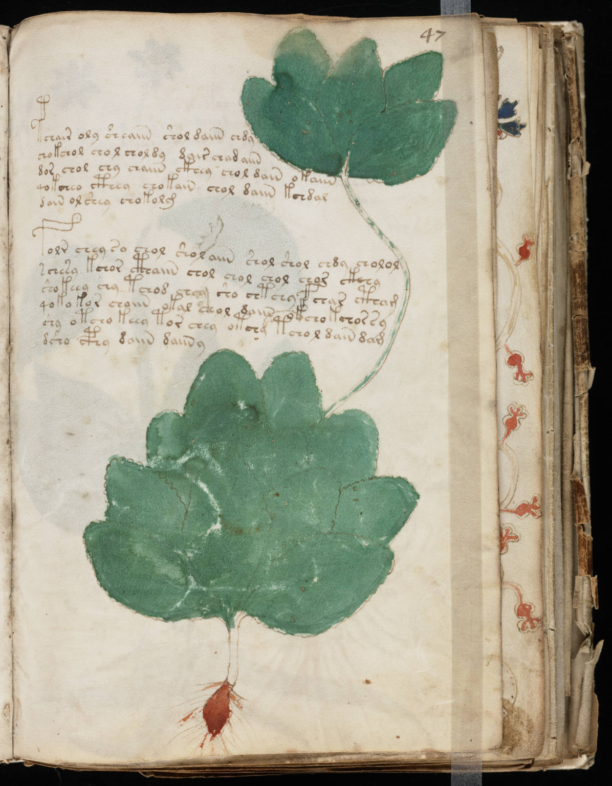

f47r
1pchair oly sheaiin shol daiin chdy2chokchol chol choldy dair chad aiin3dor chol chy chaiin ckhey chol dain okaiin4qokcheo cthey chokain chol daiin kchdal5dain ol shey chokolg6folr chey so chol shol aiin shol shol chdy cholol7schesy kchor cthaiin chol chol chol chor ckhhy8shokeey chy tchod choy sho chtchyf char ctham9qoko kor chaiin okal chol daiin okcho kchor sy10shy otcho keey tor chey otchy tchol dain dam11dsho cphy daiin daiin y
